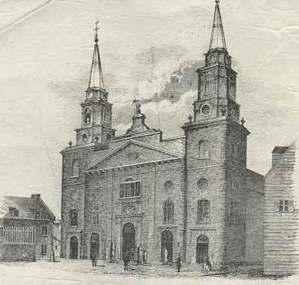

|
LA FAMILLE DE CHARLES CONSIGNY
|
Les
parents de Charles, Arsène Consigny et Amanda Thibaudeau, se
marient le 31 juillet 1888 à Québec dans l'église de la paroisse
Saint-Roch. Ils y sont
nés, Arsène le 14 octobre 1865 et Amanda le 2 février 1862, et ils y
passeront toute leur vie. Saint-Roch est à cette époque la plus
importante paroisse de la ville et un quartier ouvrier en effervescence. Amanda
et Arsène sont lettrés et signent leur acte de mariage, ainsi que
leurs témoins, ce qui est exceptionnel pour l'époque. La veille du
mariage ils ont passé un contrat devant le notaire Louis Leclerc.
Les signatures au bas de l'acte de mariage
|

L'église St-Roch du temps d'Arsène et Amanda.
L'église actuelle a été construite à partir de 1914.
|
Crescence,
leur
premier enfant, naît le 5 avril 1889. Son parrain est
Jean-Baptiste Thibaudeau et sa marraine, Aglaé Dulac dit Bonhomme, ses
grand-parents maternels. Elle épouse le 9 mai 1910 Rolland Pleau, un
cousin d'Ézilda Côté puisque leurs mères sont sœurs. Le couple a un
fils, Fernand, et plusieurs filles. Crescence
est inhumée le 8 août 1947 dans le lot K-39 dans la vieille partie du
cimetière St-Charles, rue St-Vallier ouest. Veuf, Rolland se remarie en
1950.
En 1914
Charles donne le nom de Crescence comme référence sur son contrat
d'engagement pour la 1ère guerre, elle habite alors au 28 rue
Saint-Léon à Québec, dans le quartier Saint-Sauveur. Les enfants de
Charles garderont de loin contact avec leurs cousins Pleau et les
visiteront lorsqu'ils monteront à Québec occasionnellement.
Arsène, naît le 21 novembre 1890. Son parrain
est Nicolas Consigny, oncle de l'enfant et sa marraine, Marcelline
Chantal, son épouse. Ce couple vit aussi dans St-Roch et a de nombreux
enfants. Arsène décède le 22 août 1891, à neuf mois.
Anatole, naît le 22 février 1892. Son
Parrain est Ephrem L'Heureux et sa marraine, Philomène Thibaudeau, son
épouse et tante de l'enfant. Anatole décède le 16 février 1893, à
un an.
Charles-Eugène
et Arsène-Ivanhoé,
des
jumeaux, naissent le 28 février 1893. Charles a comme parrain Charles Noreau, teneur de livres et Georgiana
Thibaudeau, son épouse et tante de l'enfant. Le parrain d'Arsène-Ivanhoé
est Ivanhoé Caron, marchand et sa marraine, Emma Thibaudeau, son
épouse et tante de l'enfant.
Charles-Eugène est notre grand-père. Quant à son jumeau, il décède
le 19 septembre 1896 et est inhumé le jour même. Il a trois ans et
demi. Francine se rappelle avoir entendu raconter que le petit est mort
suite à une ruade de cheval.
Philippe, naît le 15 avril 1894. Son parrain
est Philippe Dion, oncle de l'enfant, et sa marraine, Anne Consigny, son
épouse. Ils sont les oncle et tante de l'enfant et habitent aussi dans
Saint-Roch. Philippe décède le 30 juillet 1894 à Charlesbourg, il a
trois mois et demi.
Lucienne, naît le 8 avril 1895. Son parrain
est Philippe Goudreault, mécanicien et oncle de l'enfant et sa
marraine, Malvina Thibaudeau, son épouse. Lucienne décède le 10
juillet 1895, elle a trois mois.
Antoine, naît le 18 août 1896. Son parrain
est Edmond Consigny, cousin de l'enfant et sa marraine, Marie-Blanche
Thibaudeau, tante de l'enfant. Sur l'acte de baptême, son grand-père, Jean-Baptiste
Thibaudeau, représente le père décédé.
Antoine épouse Ernestine Leroux le 17
novembre 1920 à Montréal, dans la paroisse Très-Saint-Nom-de-Jésus.
Il vit et élève ses enfants, comme son frère Charles, dans le
quartier Maisonneuve. Il travaille comme machiniste à l'American Can
(coin Pie 1X et Ontario). Plus tard il y fait entrer sa nièce
Jacqueline qui y travaille encore les premiers mois de son mariage.
Décès
tragique d'Arsène
Consigny.
Mécanicien-machiniste, Arsène travaille comme contremaître dans l'atelier de
machinerie de son frère aîné Nicolas, rue St-Joseph dans le
quartier St-Roch. Cet atelier a une bonne renommée et ils sont
très en demande dans les nombreuses manufactures de bottes et de souliers du
quartier St-Roch.
Le 14 mars 1893, les deux frères, et un associé, avaient obtenu
du fédéral un brevet, qui porte le numéro CA 42294, pour un
"fil de fer pour faire les chevilles", un
équipement améliorant les machines à fabriquer des chaussures.
Dans
l'après-midi du 26 février 1896, Arsène décède
à l'âge de 31 ans.
En expérimentant avec du gaz acétylène, un
tout nouveau produit sur le marché, les
deux frères causent une violente explosion qui coûte la vie à
Arsène, blesse grièvement Nicolas et secoue le quartier. Les
deux frères n'en étaient pas à leur premières armes car, le
mois précédent, une légère explosion était déjà survenue.
Le journal L'Électeur du 27 février 1896 publie un long article
sur "Ce que c'est l'acétylène". En voici des extraits:
" L'accident arrivé hier à l'établissement Consigny, met
plus que jamais d'actualité à Québec l'acétylène, le nouveau
gaz destiné peut-être à détrôner l'électricité pour
l'éclairage, et même la force motrice, grâce au prix modique de
fabrication. M. Consigny est le premier qui, à Québec, a tenté
d'utiliser ce nouveau gaz. Avec la dynamo qui lui sert à
éclairer son usine, M. N. Consigny réussit à fabriquer son
propre carbure....."
L'enquête du
coroner Belleau conclue, le 3 mars suivant, que la
cause du décès d'Arsène est "une commotion cérébrale causée
accidentellement par un jet de gaz acétylène comprimé à haute
pression qui a pénétré et enfoncé l'orbite droit dans la
substance cérébrale et ce pendant que le défunt faisait des
essais pour liquéfier le dit gaz".
L'épouse
d'Arsène, Amanda, est enceinte. 1896 est une année difficile pour
Amanda, elle perd son époux en février, met au monde son dernier
enfant en août et perd un de ses jumeaux en septembre. |
|
Extrait du journal l'Électeur
du 26 février 1896:
TERRIBLE ACCIDENT à ST-ROCH,
UN HOMME TUÉ
en faisant l'expérience du nouveau gaz Acétylène
Au moment où nous allons sous presse, notre fermier M.Eugène
Leclerc, nous téléphone qu'un terrible accident vient d'arriver à
St-Roch.
M. Nicolas
Consigny, mécanicien très habile, toujours à l'affût des
nouveautés, essayait depuis quelque temps d'utiliser le nouveau
pouvoir connu sous le nom d'Acétylène.
Il y a
quelques semaines, justement durant le Carnaval, une explosion se
produisit en testant ses expériences à la manufacture Consigny. On
en fut quitte, cette fois-là, pour quelques vitres cassées, et une
panique parmi les employés, rapidement contrôlée.
M.Consigny,
un tenace, ne se laissa pas décourager et continua ses
expériences.
Malheureusement, soit faute de connaissance voulue, soit faute de
préventions nécessaires, un accident plus grave est arrivé à 2
h. 10 cet après-midi.
Le
propriétaire de la manufacture, située rue St-Joseph, porte
voisine de chez MM Gauthier & Frère, M. Nicolas Consigny
travaillait dans une pièce séparée avec son frère, M. Arsène
Consigny, pour trouver quelque moyen plus économique de faire
fonctionner la machine.
Tout
à coup, une explosion terrible se produisit et jeta la panique
parmi les employés. On accourut et on trouva les deux frères
gisant sur le plancher, privés de sentiments.
M. Jos.
Côté, marchand de tabac, se trouvant sur les lieux, s'empressa de
téléphoner pour réclamer l'assistance du prêtre et du médecin.
M. l'abbé H.
Bernier, de la cure de St-Roch, accourut immédiatement. M. Arsène
Consigny était déjà mort.
M. Nicolas Consigny
a recouvré ses sens peu après. Nous apprenons avec plaisir qu'on
le considère hors de danger.
Avis de décès du journal
l'Électeur du 27 février 1896:
CONSIGNY - Le 26 du courant, à
l'âge de 31 ans, sieur Arsène Consigny, mécanicien, époux de
Amanda Thibaudeau. Il laisse pour déplorer sa perte une épouse
inconsolable, ainsi que trois jeunes enfants.
Les funérailles auront lieu samedi le 29 du présent à 8 h.
a.m.
Le convoi funèbre quittera sa résidence, no 179 rue du Roi, à 7
h. 45 pour l'église St-Roch, et de là au cimetière St-Charles.
Parents et amis sont priés d'y assister ainsi que MM. les
congréganistes de St-Roch, les membres de la Ligue de St-Roch et
des Unions St-Sauveur et de St-Jean-Baptiste. |
Veuve,
Amanda Consigny retourne vivre chez ses parents, avec ses enfants, au 41 Ste-Hélène,
toujours dans le quartier St-Roch. Son père, Jean-Baptiste Thibaudeau,
est un marchand de fruits renommé dont le commerce se situe au 21 St-Pierre, dans la basse-ville.
Il décède en 1900.(ces
adresses sont tirées de l'annuaire Cherrier des rues de Québec publié
en 1886, j'ai supposé ici qu'elles sont encore valables dix ans plus
tard)
|
Recensement 1901
(formulaire original)

Plusieurs anomalies se trouvent
dans ce document. Le recensement a lieu en mars 1901. On y
retrouve comme chef de famille J.B. Thibodeau. Or, ce dernier
est décédé depuis près d'un an. Informé de son erreur, le
recenseur biffe le nom, mais ne corrige pas le statut de sa
veuve. Il laisse aussi en blanc les noms de famille des six
dernières personnes mentionnées, laissant entendre que ce sont
tous des Consigny.
On devrait plutôt lire:
| Dulac dit Bonhomme Aglaé |
Chef |
Veuve |
| Consigny Amanda |
fille |
Veuve |
| Thibaudeau Aglaé |
fille |
célibataire |
| Thibaudeau Blanche |
fille |
célibataire |
| Thibaudeau Fabiola |
fille |
célibataire |
| Consigny Crescence |
petite-fille |
célibataire |
| Consigny Charles-Eugène |
petit-fils |
célibataire |
| Consigny Antoine |
petit-fils |
célibataire |
|
Dans ce recensement on apprend aussi
qu'Amanda a un revenu annuel de 1500$ (colonne 26: gage
provenant d'une occupation ou d'un métier). Amanda
travaille-t-elle dans une manufacture ou un grand magasin du quartier?
ou a-t-elle une rente et le recenseur ne l'a pas inscrit dans la bonne
colonne? On y apprend aussi que Crescence et Charles fréquentent
l'école 10 mois par année. Les trois soeurs célibataires d'Amanda
travaillent sûrement, mais cela n'est pas mentionné.
Amanda Thibaudeau décède le 6 juillet 1907
à l'âge de quarante-cinq ans. Elle est inhumée au cimetière Saint-Charles de Québec.
Elle serait dans le lot C-35 532 des
Thibaudeau. (ceci est une information verbale reçue
de la réceptionniste du cimetière St-Charles. L'accès aux documents
m'est interdit, n'étant pas la titulaire du lot)
|
 CHEZ
LES CONSIGNY
CHEZ
LES CONSIGNY

 Charles devient
donc orphelin de père à 3 ans, et de mère à 14 ans. La légende
familiale disait que lui et son frère Antoine ont été placés dans un orphelinat et
qu'un
oncle, agissant comme tuteur, aurait dilapidé les biens des jeunes orphelins
Consigny.
Charles devient
donc orphelin de père à 3 ans, et de mère à 14 ans. La légende
familiale disait que lui et son frère Antoine ont été placés dans un orphelinat et
qu'un
oncle, agissant comme tuteur, aurait dilapidé les biens des jeunes orphelins
Consigny.